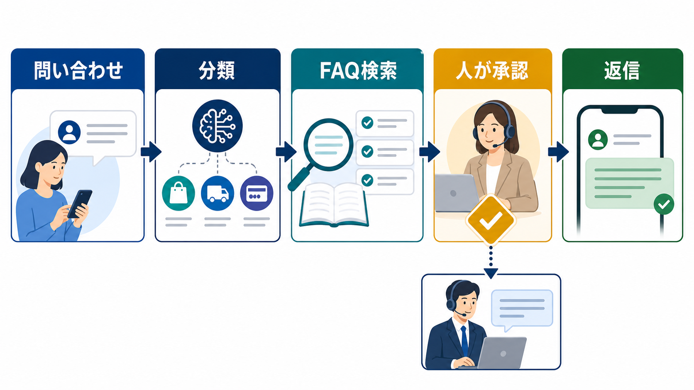

CUSTOMER SUPPORT / AI OPERATIONS
カスタマーサポートのAI活用｜問い合わせ対応を安全に効率化する
カスタマーサポートにAIを入れるときは、自動返信の可否から始めないことが重要です。質問の分類、FAQ検索、回答案、担当者への引き継ぎを分け、顧客への約束は人が確認します。

カスタマーサポートは、分類から小さくAI化する
AI導入の初期段階で顧客への完全自動返信を選ぶと、誤回答がそのまま信用や契約に影響します。IPAが示す問い合わせ対応のAI活用パターンも、実際の導入では業務の影響度と確認工程に分けて考えます。まずは分類、要約、検索など、結果を確認しやすい処理から始めます。
| 工程 | AIの補助 | 開始条件 |
|---|---|---|
| 分類 | カテゴリ・担当部署の候補 | 分類ルールがある |
| 検索 | 関連FAQ・手順の候補 | 根拠資料が更新されている |
| 回答案 | 下書き・要約・言い換え | 送信前確認者がいる |
| 返信 | 定型文の補助 | 例外と停止条件が明確 |
| 引き継ぎ | 要点と履歴の整理 | 担当者と期限が決まる |
回答の前に、FAQと根拠資料の更新日をそろえる
AIを入れても、元のFAQが古ければ古い情報を速く返すだけです。商品仕様、料金、契約、障害、返品など、更新される資料には責任者と更新日を付けます。回答候補には根拠資料を添え、根拠が見つからない場合は回答せず担当者へ戻します。
根拠
最新のFAQ、規約、手順書を決める。
回答案
質問の意図に合う候補を作る。
引き継ぎ
根拠不足や例外は人へ戻す。
人が確認する問い合わせを先に決める
人の確認が必要かどうかを、担当者の気分で判断しないようにします。返金、契約変更、法的な主張、障害・安全に関する申告、個人情報の開示、強い不満を含む問い合わせは、AIの回答候補を使っても、人が最終判断する範囲に置きます。
- 顧客への約束：納期、料金、返金、契約条件が変わるか。
- 影響の大きさ：誤回答で損失、信用、継続利用へ影響するか。
- 個別事情：顧客の履歴や契約内容を参照する必要があるか。
- 根拠の有無：最新の社内資料へ戻れるか。
- エスカレーション：誰がいつまでに対応するか。
顧客データは必要最小限にし、権限を分ける
問い合わせ文には氏名、連絡先、注文番号、契約内容などが含まれることがあります。AIサービスへ渡す前に、処理に不要な情報を除き、サービスの保存・学習・委託条件と社内ルールを確認します。個人情報の扱いは、出典欄の個人情報保護委員会の注意喚起と照合してください。
| 管理項目 | 決めること | 確認タイミング |
|---|---|---|
| 入力 | 氏名・契約・注文情報の範囲 | 導入前・業務変更時 |
| 権限 | 閲覧・回答・承認できる人 | 入社・異動・退職時 |
| 保存 | ログ、回答案、削除条件 | 契約更新・定期監査 |
| 停止 | 誤回答や漏えい時の連絡先 | 試行開始前・事故後 |
改善は返信速度だけでなく、戻りと修正を見る
AI導入の効果を返信時間だけで評価すると、誤回答の修正や担当者への戻りが見えません。導入前と同じ条件で、分類にかかる時間、回答案の修正回数、エスカレーション数、再問い合わせ、顧客への返信時間を記録します。
誤回答時の切り戻しを決めてから広げる
誤回答が起きたときは、自動返信を止め、対象期間と送信先を確認し、担当者が訂正します。原因がFAQの古さなら資料を直し、分類ミスならルールを直し、確認漏れなら承認工程を直します。AIだけを責めず、業務フローのどこを修正するかを記録します。
カスタマーサポートAIの導入前チェック
最初の試行では、顧客への直接送信より、社内担当者への回答候補と要約から始めます。次の項目が埋まっているか確認してください。
- 対象カテゴリと対象外の問い合わせが定義されているか
- 回答の根拠資料と更新者が決まっているか
- 送信前に確認する担当者とチェック項目があるか
- 個人情報・契約情報の入力範囲を制限しているか
- 誤回答時に停止・訂正・再発防止へ戻せるか
- IPA「AIの利活用、AIによるDXの推進」（2026-07-13確認）
- 個人情報保護委員会「生成AIサービスの利用に関する注意喚起」（2026-07-13確認）
- 経済産業省「AI事業者ガイドライン」（2026-07-13確認）
よくある質問
小さな会社でもカスタマーサポートAIを導入できますか？
可能です。全問い合わせを自動化するのではなく、カテゴリ分類、FAQ検索、回答案の作成など、担当者が確認しやすい工程から始めます。対象カテゴリ、確認者、停止条件を小さく決めます。
AIエージェントに顧客対応を任せられますか？
技術的な可否だけでなく、顧客への約束、契約、個人情報、例外対応を確認します。まずは人の承認を残し、誤回答時の切り戻しを検証してから範囲を広げます。
問い合わせデータをAIの学習に使ってよいですか？
サービス条件と自社の個人情報・機密情報のルールを確認する必要があります。学習利用の有無だけでなく、保存期間、委託先、権限、削除方法も確認し、必要最小限のデータで試します。